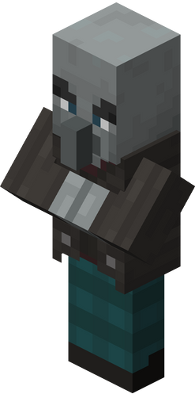

The Rockbreaker
Stony Peaks Boss

| Type | Vindicator |
|---|---|
| HP | 30 |
| Attack | 6 |
| Defense | 3 |
| Speed | 2 |
| Size | 2 × 2 |
| Phase 2 | ≤ 50% HP |
| Dimension | Overworld |
The Rockbreaker
Stony Peaks biome boss — a brutish giant whose seismic strikes reshape the battlefield.
The Rockbreaker is an enormous Vindicator empowered by the raw geological force of the Stony Peaks, able to split stone and hurl boulders with casual ease. It shrugs off punishment through sheer resilience and punishes aggression with seismic counterattacks.
Abilities
- Seismic Slam: Strikes the ground in a + cross pattern extending 3 tiles in each cardinal direction, dealing 5 damage. Telegraphed 1 turn in advance.
- Boulder Toss: Hurls a boulder up to 4 tiles, dealing 4 damage and creating a permanent obstacle at the target tile.
- Fortify: Reactive — gains +5 DEF for 2 turns immediately after taking a hit.
- Avalanche: Sends a full-row attack for 3 damage every 4 turns. Telegraphed 1 turn in advance.
Phase 2 — “Total Collapse”
Triggers at ≤ 50% HP. Gains a permanent passive +3 DEF. Seismic Slam extends to 4 tiles per direction and destroys obstacles in its path. Boulder Toss now throws 2 boulders per use. Avalanche hits 2 rows simultaneously.
Strategy
Stay off-axis from the boss to avoid Seismic Slam. Burst damage is most effective — chip strategies struggle against Fortify stacking.